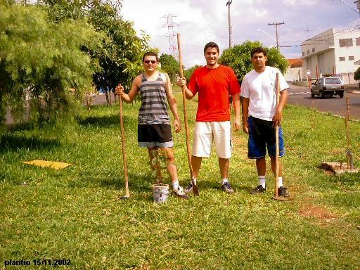

|
|
Alexandre, Danilo e
Fabio, os idealizadores do projeto
"Plante a Vida!",
cresceram praticamente juntos e implementaram, em 2002,
um projeto de arborização urbana,
motivados pela deficiente arborização da cidade
de São Carlos - SP.
Compartilhando do mesmo ideal e amor pela natureza, decidimos criar este
projeto
para pôr em
prática um antigo sonho de ver a nossa avenida totalmente arborizada,
com árvores frutíferas e não frutíferas,
proporcionando uma melhor qualidade de vida aos moradores da região.
 |
Alexandre,
Danilo e Fabio: Os três idealizadores do Projeto Plante a Vida! |
Abaixo vemos uma breve apresentação de cada um dos idealizadores
e do nosso colaborador, contando um pouco sobre as suas vidas
e sobre a sua relação com o projeto:
| Danilo Periotto: natural
da cidade de São Carlos - SP, tem 29 anos, e é aluno do curso de Bacharelado em
Química, na Universidade Federal de São Carlos (UFSCar). |
|
| P.: De onde partiu a idéia de criar um projeto voltado
a arborização? |
| R.: Os moradores da nossa cidade não têm a
tradição de plantar árvores em vias públicas, nem tão pouco a prefeitura municipal,
exceto raras exceções. Isso torna a cidade um tanto desagradável, pois há
pouquíssimas calçadas sombreadas em que podemos caminhar ou estacionar os automóveis.
Outro fato é que nos sentimos um tanto sufocados com o ambiente excessivo de concreto.
Foi pensando em mudar esta realidade que nós criamos um projeto de arborização para
incentivar o plantio de árvores e arbustos em área urbana. Uma cidade bem arborizada
(ex.: Araraquara), proporciona uma maior qualidade de vida e um bem estar natural aos
moradores. |
|
| P.: Para você, qual a importância da arborização? |
| R.: A arborização tem um papel imprescindível para
uma boa qualidade de vida. Plantando árvores em vias públicas, você traz de volta todo
um mini ecossistema que foi expulso com a construção civil. Em uma área arborizada,
você nota uma maior quantidade de insetos (abelhas, borboletas, joaninhas) e pássaros
(pardais, bem-te-vis, beija-flores, etc.), que trazem vida às flores e alegram-nos com
seus cantos e com sua beleza. Por outro lado você terá ruas mais bonitas e agradáveis,
pois as árvores proporcionam flores, aromas e ótimas sombras ! |
|
| E-mail: planteavida@yahoo.com.br |
| Alexandre: tem
30 anos,
é natural de São Carlos - SP, e é formado no curso de Ciências Biológicas
pela Universidade Estadual de Londrina (UEL). |
|
| P.: Quais são as perspectivas para o sucesso do
projeto? |
R.: Para que tenha sucesso, é necessário que haja o
comprometimento de todos.
De nossa parte (como
idealizadores): realizar, incentivar e divulgar o plantio de novas árvores, orientar
sobre quais as melhores espécies, etc.
Da sociedade: cuidados básicos
com as mudas (proteção, irrigação, etc). |
|
| P.:
O projeto tem uma área de atuação fixa ou pode ser estendido? |
| R.: Inicialmente, o objetivo do projeto é a
arborização do canteiro central da Avenida Henrique Gregori - entre a Ruas Desembargador
Júlio de Faria e Ananias Evangelista de Toledo. No entanto, pode (e deve) ser estendindo
para o restante do canteiro e também para outras áreas da cidade. |
|
| E-mail:
sancanauta@yahoo.com.br |
| Fábio Luiz - natural
de São Carlos- SP, tem 31 anos, e é estudante e profissional da
área de Eletrônica. |
|
| P.: Quais são os recursos ultilizados para a
aquisição das mudas e para o plantio da árvores? |
| R.: Na verdade, a resposta para esta
questão tem relação direta com a preservação e sustenção desse
seres tão importantes para o bem estar da cidade. Muito cedo foi
possivel perceber, pelos idealizadores do projeto, que além de doações
de entidades municipais, era possivel se produzir mudas em regime doméstico
(salvo especies que necessitam de processos mais específicos). Graças
à força da natureza, árvores, na maioria delas as frutíferas, tornou-se
possivel a obtenção de novas plantas logo nos proximos ciclos. Um
exemplo bem interessante e pratico, além de motivo de orgulho para nos
do projeto, foi a de conseguir logo após a primeira florada de uma Mangueira
(esta plantada por um dos idealizadores do projeto), a produção de
cerca de doze novas mudas sob a sombra dessa árvore. Hoje, a partir
de exemplos como este, podemos todo ano somar algumas mudas a mais em
nosso projeto. O que é importante destacar nesse exemplo, é que para
a obtenção de novas mudas, sejam elas quais forem, a responsável
por todo esse processo é a natureza e, com certeza, o papel mais
importante do homem nesse caso é o de mantenedor e protetor dessa
nova árvore. Com a simples atitude de estar sempre aguando e, por
algumas vezes, servir essa planta de algum esterco ou adubo, como uma
casca de fruta, o premio por essa atitude será sempre o prazer de
desfrutar de uma deliciosa sombra, de comer frutos suculentos ou até
de auxiliar na absorção da poluição, manter o ar em boa qualidade
e ainda manter o nivel de ruídos um pouco menos agressivos.
Vale a pena plantar!!! |
|
| P.: O que falta para a população se conscientizar da
importância da arborização? |
| R.: Certamente, hoje,
podemos afirmar que a população está bem mais perto das informações
e problemas existentes pela falta de uma arborização em nossa cidade
ou em qualquer lugar que tenha esse problema no pais. Relacionado a
questão de concientização, o que falta, com certeza, para uma maior
aproximação das pessoas ao meio ambiente urbano, é uma Política
ecologica mais dinâmica e voltada principalmente para as cidades.
Todos nós sabemos que a destruição e exploração dos recursos de
nossas florestas vem do meio urbano (para ser bem direto, " quem
destroi é quem vive na cidade"). O caminho para um futuro talvez
mais bem equilibrado será a participação direta de todos na luta
contra a destrição do meio ambiente. Sem nenhuma pretenção a
criação de uma utopia, é fato que o caminho para o sucesso é a
atitude vinda de dentro pra fora, ou seja, primeiramente precisamos
aprender a conviver, explorar e manter viva a ideia de arborização
dentro de nossas cidades, de nosso bairro, em nossa vida, para depois
então colher os frutos de uma ideologia construida em bases sólidas.
É sabio então afirmar que após atingir esse ideal de vida, conseqüentemente
atingiremos naturalmente a solução para a NÃO extinção das
grandes áreas e da biodiversidade do Planeta. |
|
| E-mail:
fabio.luiz.barbosa@itelefonica.com.br |
| Fernando Periotto
(colaborador): natural da cidade de São Carlos - SP, tem
32 anos, é Doutor no curso de Ciências Biológicas pela Universidade Federal de São Carlos. |
|
| P.: Como profissional formado na área de Ciências
Biológicas, como você vê a criação deste projeto? |
| R.: O projeto mostra sua importância como uma
excelente iniciativa à arborização da cidade de São Carlos, já que atuamente, é
notável a escassês de árvores e qualquer tipo de vegetação na grande maioria das ruas
e avenidas municipais. Tal arborização, caso bem planejada, com espécies nativas da
região, por exemplo, será capaz de atrair elementos da fauna local que porventura não
mais são observados. |
|
| P.:
O projeto possui patrocínios? Como as pessoas
interessadas podem ajudá-los na
execução do projeto? |
| R.: Não possui, porém vários são os órgãos que
podem ser colaboradores deste projeto, sejam eles municipais, particulares, entre outros,
sempre visando uma melhoria em vários aspéctos de nossa cidade: ecológicos, qualidade
de vida, etc. Os interessados podem ajudar, plantando árvores no local onde moram,
quantas forem possíveis, e após o plantio, ainda podem ter a sua ação incluída
em um local exclusivo de nosso site, no link "Nossos Parceiros". |
|
| E-mail:ferperiotto@yahoo.com.br |
Continue acessando
os links ao lado e conheça um pouco mais sobre nosso projeto. |